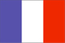

(overseas territory of France)
{kind=link}

|
French Southern and Antarctic Lands (overseas territory of France) |
 |
| Introduction Geography People Government Economy Communications Transportation Military Transnational Issues | ||
|
|
||
| French Southern and Antarctic Lands | Introduction | Top of Page |
| Background: | The Southern Lands consist of two archipelagos, Iles Crozet and Iles Kerguelen, and two volcanic islands, Ile Amsterdam and Ile Saint-Paul. They contain no permanent inhabitants and are visited only by researchers studying the native fauna. The Antarctic portion consists of "Adelie Land," a thin slice of the Antarctic continent discovered and claimed by the French in 1840. |
| French Southern and Antarctic Lands | Geography | Top of Page |
| Location: | south of Africa, islands in the southern Indian Ocean, about equidistant between Africa, Antarctica, and Australia; note - French Southern and Antarctic Lands includes Ile Amsterdam, Ile Saint-Paul, Iles Crozet, and Iles Kerguelen in the southern Indian Ocean, along with the French-claimed sector of Antarctica, "Adelie Land"; the US does not recognize the French claim to "Adelie Land" |
| Geographic coordinates: | 43 00 S, 67 00 E |
| Map references: | Antarctic Region |
| Area: |
total:
7,781 sq km
land: 7,781 sq km water: 0 sq km note: includes Ile Amsterdam, Ile Saint-Paul, Iles Crozet and Iles Kerguelen; excludes "Adelie Land" claim of about 500,000 sq km in Antarctica that is not recognized by the US |
| Area - comparative: | slightly less than 1.3 times the size of Delaware |
| Land boundaries: | 0 km |
| Coastline: | 1,232 km |
| Maritime claims: |
exclusive economic zone:
200 NM from Iles Kerguelen only
territorial sea: 12 NM |
| Climate: | antarctic |
| Terrain: | volcanic |
| Elevation extremes: |
lowest point:
Indian Ocean 0 m
highest point: Mont Ross on Iles Kerguelen 1,850 m |
| Natural resources: | fish, crayfish |
| Land use: |
arable land:
0%
permanent crops: 0% permanent pastures: 0% forests and woodland: 0% other: 100% |
| Irrigated land: | 0 sq km (1993) |
| Natural hazards: | Ile Amsterdam and Ile Saint-Paul are extinct volcanoes |
| Environment - current issues: | NA |
| Geography - note: | islands component is widely scattered across remote locations in the southern Indian Ocean |
| French Southern and Antarctic Lands | People | Top of Page |
| Population: |
no indigenous inhabitants (July 2001 est.)
note: in 1997, there were about 100 researchers whose numbers vary from winter (July) to summer (January) |
| French Southern and Antarctic Lands | Government | Top of Page |
| Country name: |
conventional long form:
Territory of the French Southern and Antarctic Lands
conventional short form: French Southern and Antarctic Lands local long form: Territoire des Terres Australes et Antarctiques Francaises local short form: Terres Australes et Antarctiques Francaises |
| Dependency status: | overseas territory of France since 1955; administered from Paris by High Commissioner of the Republic Brigitte GIRARDIN (since 25 March 1998), assisted by Secretary General Jean-Yves HERMOSO (since NA) |
| Administrative divisions: | none (overseas territory of France); there are no first-order administrative divisions as defined by the US Government, but there are 3 districts named Ile Crozet, Iles Kerguelen, and Iles Saint-Paul et Amsterdam; excludes "Adelie Land" claim in Antarctica that is not recognized by the US |
| Legal system: | the laws of France, where applicable, apply |
| Diplomatic representation in the US: | none (overseas territory of France) |
| Diplomatic representation from the US: | none (overseas territory of France) |
| Flag description: | the flag of France is used |
| French Southern and Antarctic Lands | Economy | Top of Page |
| Economy - overview: | Economic activity is limited to servicing meteorological and geophysical research stations and French and other fishing fleets. The fish catches landed on Iles Kerguelen by foreign ships are exported to France and Reunion. |
| French Southern and Antarctic Lands | Communications | Top of Page |
| Internet country code: | .tf |
| French Southern and Antarctic Lands | Transportation | Top of Page |
| Waterways: | none |
| Ports and harbors: | none; offshore anchorage only |
| Merchant marine: |
total:
74 ships (1,000 GRT or over) totaling 3,024,194 GRT/5,255,703 DWT
ships by type: bulk 7, cargo 5, chemical tanker 9, container 11, liquefied gas 7, petroleum tanker 23, roll on/roll off 12 note: includes some foreign-owned ships registered here as a flag of convenience: France 1 (2000 est.) |
| Airports: | none |
| French Southern and Antarctic Lands | Military | Top of Page |
| Military - note: | defense is the responsibility of France |
| French Southern and Antarctic Lands | Transnational Issues | Top of Page |
| Disputes - international: | "Adelie Land" claim in Antarctica is not recognized by the US |